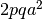
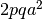

Estimating cumulative  in simulations of quantitative traits.¶
in simulations of quantitative traits.¶
When simulating quantitative traits, one is often interested in the relationship between mutation frequency and contribution to overall genetic variance. Specifically, a plot where the x axis is mutation frequency and the y axis is the cumulative relative/percent contribution to genetic variance serves as a summary of the “genetic architecture” of a trait that has been used by several authors.
Under additive models, it is tempting to use the equation from the methods section of Simons et al (2014), which provides an explicit formula for generating such curves. Similar formulas exist in Eyre-Walker (2010). However, they are incorrect when the assumption of independent sites is violated, because the genetic background on which a site finds itself is a function of both linkage and the effect sizes of mutations, and hence not randomized each generation. Thus, it is incorrect to apply these formulas to simulations from recombining regions. In other words, if such curves were used to estimate the total additive variance () under an additive model, from simulations where sites affecting the trait are partially-linked, then the result would be different from the actual total genetic variance ( ).
).
In order to generate these curves from simulations with linkage, we turn to an approach based on explicit linear regression and estimation of effect sizes within frequency classes based on a Type I sum of squares. We first applied this procedure in Sanjak et al., and it is re-implemented here.
The procedure is as follows:
 is a vector of genetic values for each diploid in the population
is a vector of genetic values for each diploid in the population is a matrix with values 0, 1, or 2, representing the number of copies of each mutation contributing to . For a population of
is a matrix with values 0, 1, or 2, representing the number of copies of each mutation contributing to . For a population of  diploids with
diploids with  segregating variants affecting the trait, the matrix has rows and columns.
segregating variants affecting the trait, the matrix has rows and columns.
The matrix is sorted as follows:
- From left to right, columns are sorted in descending order of column sums (mutation frequency)
- Within each frequency group, columns are sorted in descending order based on the absolute value of effect sizes.
The justification for this sorting order comes from fairly standard considerations, namely that the contribution to  , where
, where  is the difference in trait value between genotypes AA and aa. Note, however, that this is a modeling choice, and that it would also be justified to sort the matrix according to . Maybe we will add that as an option in the future.
is the difference in trait value between genotypes AA and aa. Note, however, that this is a modeling choice, and that it would also be justified to sort the matrix according to . Maybe we will add that as an option in the future.
If contains redundant columns, they are collapsed into a single column.
We regress onto using QR decomposition, and obtain the sum of squares for each predictor as well as the residual sum of squares. The total sum of squares (TSS) is the sum of all of these terms.
These sums of squares are summed within each frequency group, and dividing by TSS is the proportion of variance explained by that frequency group.
Technical Notes¶
The above regression is equivalent to the following in R:
data <- cbind(x,G)
FORMULA <- paste(colnames(data)[1], "~", paste(colnames(data)[-1], collapse=" + "))
xx = summary(aov(lm(as.formula(FORMULA),data=data)))
The regression method was implemented using the GNU Scientific Library
References¶
- Eyre-Walker, A. (2010). Evolution in health and medicine Sackler colloquium: Genetic architecture of a complex trait and its implications for fitness and genome-wide association studies. Proceedings of the National Academy of Sciences, 107 Suppl 1(suppl 1), 1752–1756. http://doi.org/10.1073/pnas.0906182107
- Lohmueller, K. E. (2014). The impact of population demography and selection on the genetic architecture of complex traits. PLoS Genetics, 10(5), e1004379. http://doi.org/10.1371/journal.pgen.1004379
- Sanjak, J., Long, A. D., & Thornton, K. R. (2016). The Genetic Architecture of a Complex Trait is more Sensitive to Genetic Model than Population Growth.
- Simons, Y. B., Turchin, M. C., Pritchard, J. K., & Sella, G. (2014). The deleterious mutation load is insensitive to recent population history. Nature Genetics, 46(3), 220–224. http://doi.org/10.1038/ng.2896
- Uricchio, L. H., Witte, J. S., & Hernandez, R. D. (2015). Selection and explosive growth may hamper the performance of rare variant association tests. bioRxiv, 015917. http://doi.org/10.1101/015917